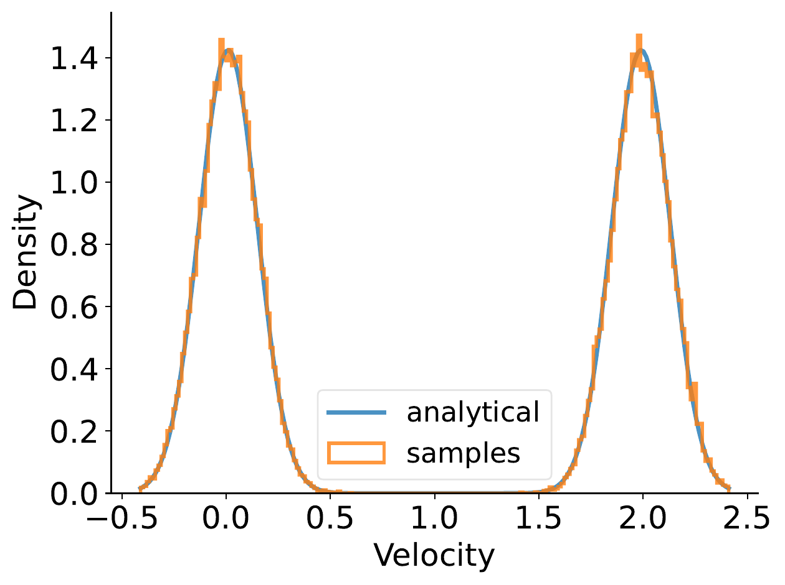
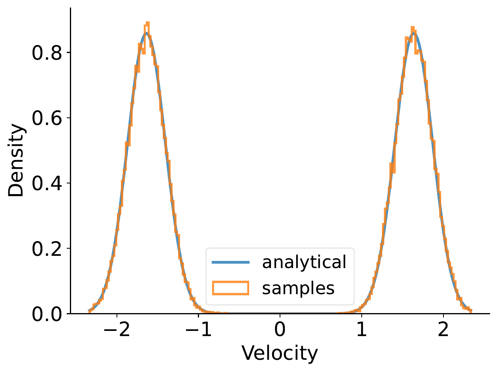
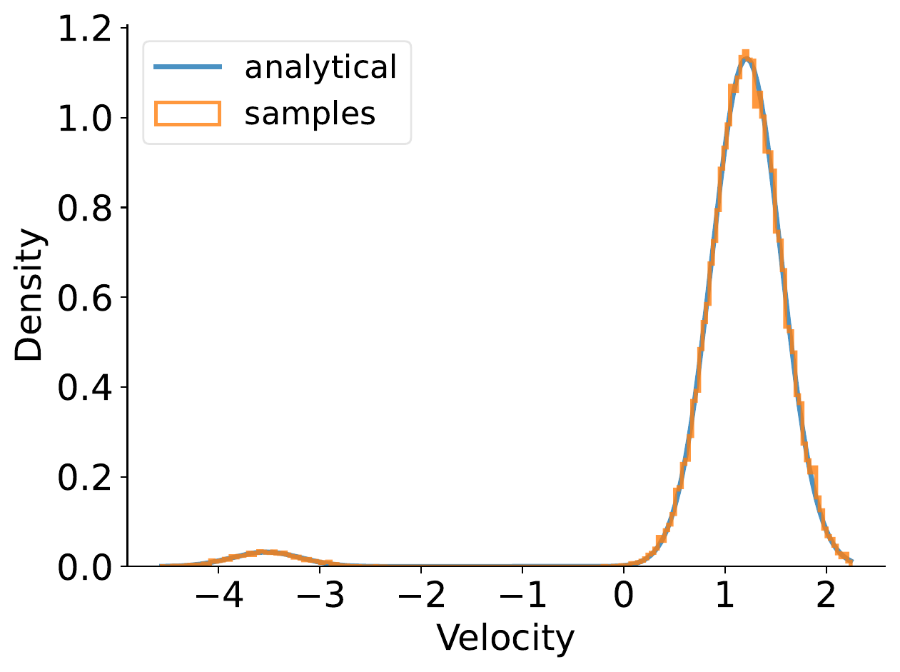

We formulate a hierarchical rectified flow to model data distributions. It hierarchically couples multiple ordinary differential equations (ODEs) and defines a time-differentiable stochastic process that generates a data distribution from a known source distribution. Each ODE resembles the ODE that is solved in a classic rectified flow, but differs in its domain, i.e., location, velocity, acceleration, etc. Unlike the classic rectified flow formulation, which formulates a single ODE in the location domain and only captures the expected velocity field (sufficient to capture a multi-modal data distribution), the hierarchical rectified flow formulation models the multi-modal random velocity field, acceleration field, etc., in their entirety. This more faithful modeling of the random velocity field enables integration paths to intersect when the underlying ODE is solved during data generation. Intersecting paths in turn lead to integration trajectories that are more straight than those obtained in the classic rectified flow formulation, where integration paths cannot intersect. This leads to modeling of data distributions with fewer neural function evaluations. We empirically verify this on synthetic 1D and 2D data as well as MNIST and CIFAR10 data.
The above figure shows an example of the velocity distribution at different space-time locations for the source distribution corresponding to a standard Gaussian and the target distribution being a mixture of two Gaussians. In the top row, we validate the theoretically derived velocity distribution by comparing its probability density function (blue) with the empirical sample histogram (orange) at various times $t$ and locations $x_t$. The bottom row demonstrates how our proposed HRF effectively models the velocity distribution. Below are additional experimental results on 1D data, 2D data, MNIST, CIFAR-10, and ImageNet-32. We observe the proposed HRF to achieve compelling results.

@inproceedings{
zhang2025towards,
title={Towards Hierarchical Rectified Flow},
author={Yichi Zhang and Yici Yan and Alex Schwing and Zhizhen Zhao},
booktitle={The Thirteenth International Conference on Learning Representations},
year={2025},
url={https://openreview.net/forum?id=6F6qwdycgJ}
}